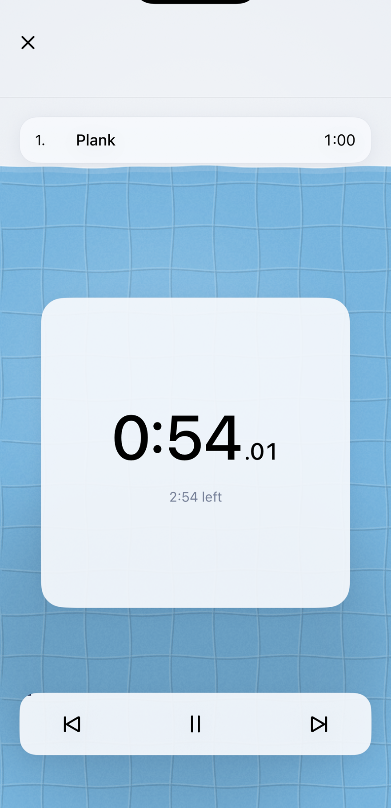
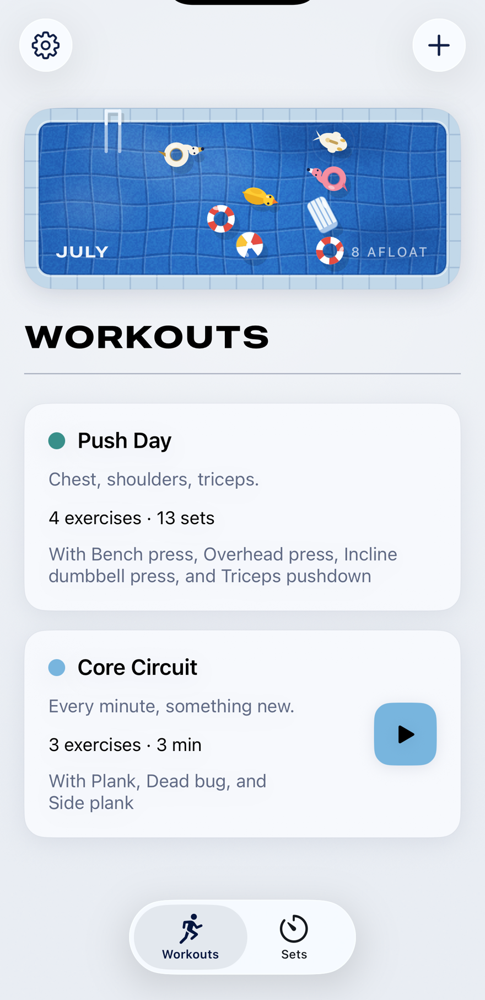

Timed workouts play themselves
Write the program once. Lido runs it with voice cues — what's next, halfway, five seconds left — so your phone stays in your pocket.
Sets, counted for you
For gym workouts you run yourself: tap when a set ends and Lido times the rest, chiming when it's time to lift again.
The month keeps its own record
Finish a workout and its toy drifts into the pool; a heavy month earns a bigger one. Nothing counts streaks, and nothing is ever red because you rested.
Share a workout
Send a program to a friend as a link. It opens in their Lido, ready to add.
Support
Questions or trouble? Write to lidoworkoutapp@gmail.com.
Lido keeps everything on your phone — no account, no ads, no analytics. Shared workouts travel inside the link itself and never touch a server.
Made by Brandon Lukas.